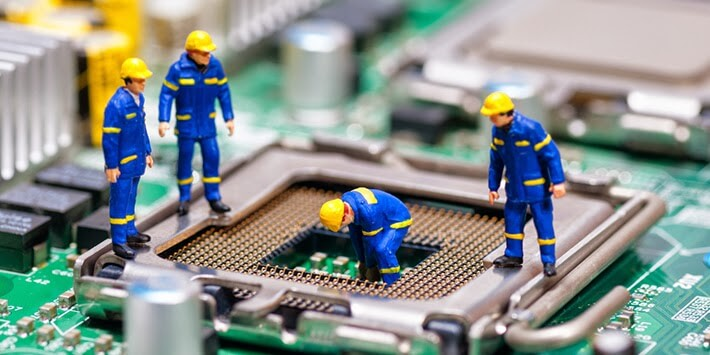
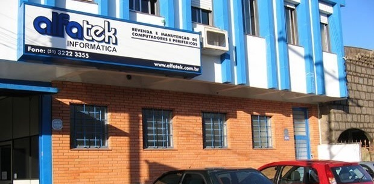
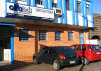

Nossa história
Fundada em fevereiro de 1993, a Alfatek Informática atua na região da Grande Porto Alegre com especialização em manutenção de computadores, monitores, notebooks, impressoras e servidores de rede.
33 anos cuidando da tecnologiaNossa empresa atua no setor de tecnologia, oferecendo atendimento em campo e balcão, além de serviços de manutenção para computadores, monitores, notebooks, impressoras, servidores e periféricos. Atendemos empresas privadas, órgãos públicos e a comunidade da Grande Porto Alegre, com profissionais experientes, laboratório de reparos e logística preparada para responder com agilidade às necessidades dos clientes.
Fundada em fevereiro de 1993, a Alfatek Informática atua na região da Grande Porto Alegre com especialização em manutenção de computadores, monitores, notebooks, impressoras e servidores de rede.
33 anos cuidando da tecnologiaSuporte técnico para pequenas e médias empresas, com soluções de manutenção de equipamentos e prevenção de incidentes ajustadas à rotina de cada cliente.
Instalação, configuração, diagnóstico e manutenção de hardware e software para computadores, notebooks, impressoras, servidores e periféricos.
Avaliação e reparo técnico em laboratório, com atendimento multimarcas e orientação clara sobre o serviço indicado para cada equipamento.


Uma história de atendimento técnico e relacionamento com clientes na Grande Porto Alegre, construída desde 1993.
Conheça nossa história
Horário de atendimento
Segunda a sexta
8h30–12h · 13h30–18h
Converse com nossa equipe sobre assistência técnica, contratos de manutenção e suporte para sua empresa.